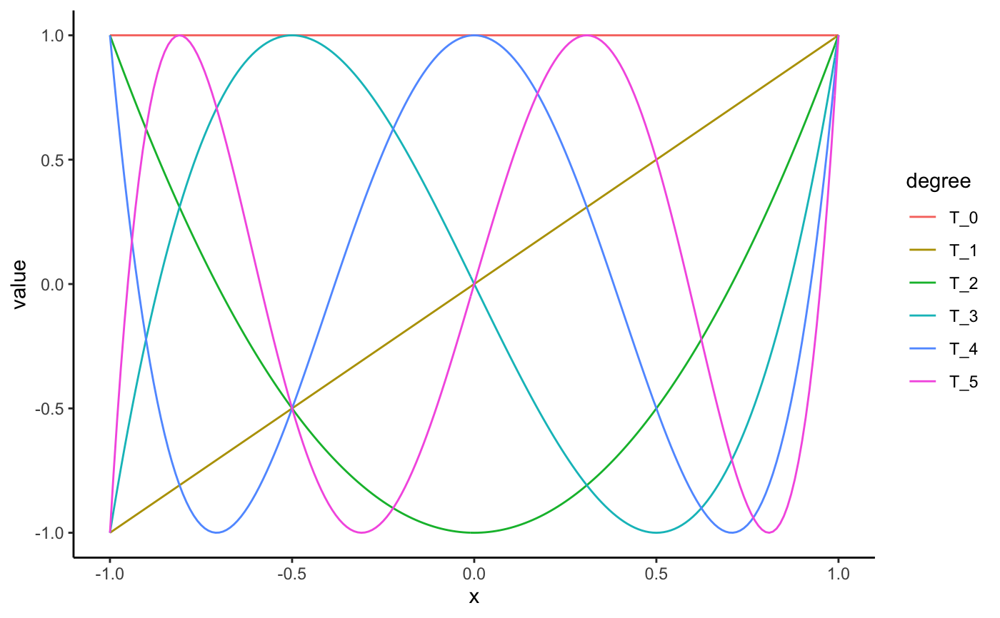

Chebyshev polynomials as computed by orthopolynom.
chebyshev(degree, kind = "t", indeterminate = "x", normalized = FALSE) chebyshev_roots(k, n)
| degree | degree of polynomial |
|---|---|
| kind |
|
| indeterminate | indeterminate |
| normalized | provide normalized coefficients |
| k, n | the k'th root of the n'th chebyshev polynomial |
a mpoly object or mpolyList object
orthopolynom::chebyshev.t.polynomials(),
orthopolynom::chebyshev.u.polynomials(),
orthopolynom::chebyshev.c.polynomials(),
orthopolynom::chebyshev.s.polynomials(),
http://en.wikipedia.org/wiki/Chebyshev_polynomials
chebyshev(0)#> 1chebyshev(1)#> xchebyshev(2)#> -1 + 2 x^2chebyshev(3)#> -3 x + 4 x^3chebyshev(4)#> 1 - 8 x^2 + 8 x^4chebyshev(5)#> 5 x - 20 x^3 + 16 x^5chebyshev(6)#> -1 + 18 x^2 - 48 x^4 + 32 x^6chebyshev(10)#> -1 + 50 x^2 - 400 x^4 + 1120 x^6 - 1280 x^8 + 512 x^10chebyshev(0:5)#> 1 #> x #> 2 x^2 - 1 #> 4 x^3 - 3 x #> 8 x^4 - 8 x^2 + 1 #> 16 x^5 - 20 x^3 + 5 xchebyshev(0:5, normalized = TRUE)#> 0.564189583547756 #> 0.7978846 x #> 1.595769 x^2 - 0.7978846 #> 3.191538 x^3 - 2.393654 x #> 6.383076 x^4 - 6.383076 x^2 + 0.7978846 #> 12.76615 x^5 - 15.95769 x^3 + 3.989423 xchebyshev(0:5, kind = "u")#> 1 #> 2 x #> 4 x^2 - 1 #> 8 x^3 - 4 x #> 16 x^4 - 12 x^2 + 1 #> 32 x^5 - 32 x^3 + 6 xchebyshev(0:5, kind = "c")#> 1 #> 0.5 x #> 0.5 x^2 - 1 #> 0.5 x^3 - 1.5 x #> 0.5 x^4 - 2 x^2 + 1 #> 0.5 x^5 - 2.5 x^3 + 2.5 xchebyshev(0:5, kind = "s")#> 1 #> x #> x^2 - 1 #> x^3 - 2 x #> x^4 - 3 x^2 + 1 #> x^5 - 4 x^3 + 3 xchebyshev(0:5, indeterminate = "t")#> 1 #> t #> 2 t^2 - 1 #> 4 t^3 - 3 t #> 8 t^4 - 8 t^2 + 1 #> 16 t^5 - 20 t^3 + 5 t# visualize the chebyshev polynomials library(ggplot2); theme_set(theme_classic()) library(tidyr) s <- seq(-1, 1, length.out = 201) N <- 5 # number of chebyshev polynomials to plot (cheb_polys <- chebyshev(0:N))#> 1 #> x #> 2 x^2 - 1 #> 4 x^3 - 3 x #> 8 x^4 - 8 x^2 + 1 #> 16 x^5 - 20 x^3 + 5 x# see ?bernstein for a better understanding of # how the code below works df <- data.frame(s, as.function(cheb_polys)(s)) names(df) <- c("x", paste0("T_", 0:N)) mdf <- gather(df, degree, value, -x) qplot(x, value, data = mdf, geom = "line", color = degree)# roots of chebyshev polynomials N <- 5 cheb_roots <- chebyshev_roots(1:N, N) cheb_fun <- as.function(chebyshev(N))#>cheb_fun(cheb_roots)#> [1] -1.776357e-15 -4.440892e-16 3.061617e-16 -6.661338e-16 1.776357e-15#>#>#>w <- function(x) 1 / sqrt(1 - x^2) integrate(function(x) T2(x) * T3(x) * w(x), lower = -1, upper = 1)#> 0 with absolute error < 1.3e-14#> 3.080156e-11 with absolute error < 6.2e-07#> 0 with absolute error < 1.3e-14(cheb_roots <- chebyshev_roots(1:4, 4))#> [1] 0.9238795 0.3826834 -0.3826834 -0.9238795#> [1] -1.110223e-16#> [1] 1.911888e-16#> [1] 4.718448e-16#> [1] -1.110223e-16#> [1] 1.766354e-16#> [1] 4.359277e-16